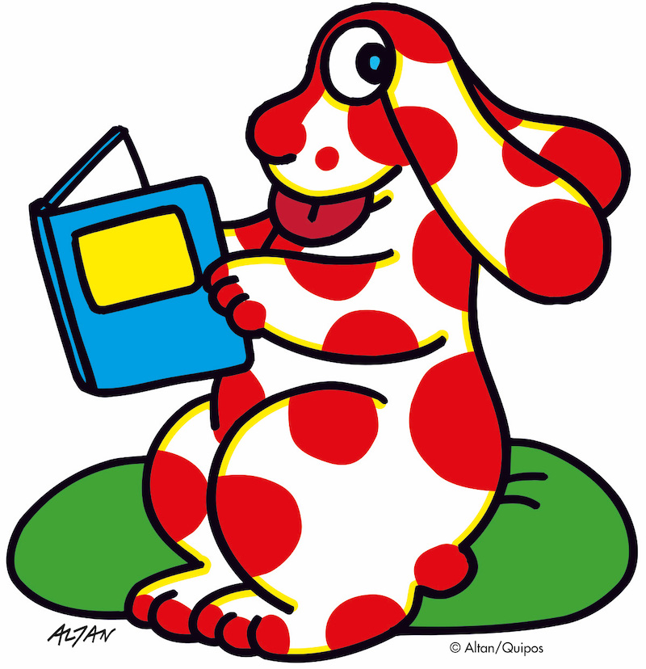
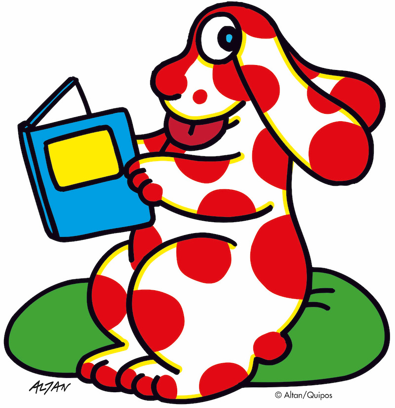
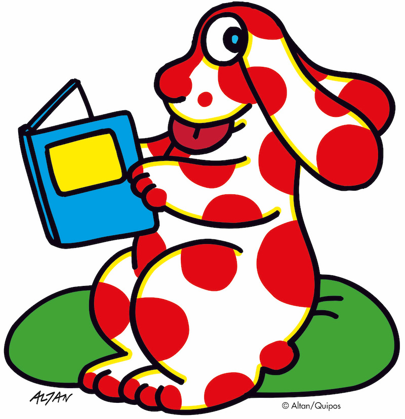

Calendario
Giulio Bizzarri. Arte, divertissement, Pubblicità
 

Musei Civici di Reggio Emilia celebrano Giulio Bizzarri, a tre anni dalla scomparsa, per ricostruire la figura complessa e poliedrica di uno dei più importanti intellettuali reggiani. Una mostra per sottolineare i molteplici aspetti del lavoro di Giulio Bizzarri, per ritrovarne la presenza come autore e ricostruirne l’identità culturale, decifrando la complessa poetica attraverso gli archivi che documentano la sua attività, pubblica e privata. Le ricerche d’archivio e la realizzazione del catalogo sono in collaborazione con Marta Sironi e ISIA Urbino.
La grafica della mostra è stata curata da ISIA U.
Art Bonus: IREN | Fondazione Manodori
sponsor: Coopservice | Thedotcompany
in collaborazione con Archivio Storico Barilla - Parma - Italia
Si comunica che alla sezione trasparenza è pubblicato il Bando per l’assegnazione di contratti di collaborazione per studenti e studentesse ISIA Urbino, con scadenza il 7 dicembre 2023, ore 12.00. Domanda autocertificazione, informativa sulla privacy e portfolio, dovranno essere inviati in un unico file pdf a bassa risoluzione.

Durante il Laboratorio di Basic Design abbiamo esplorato tecniche e strumenti tipici della stampa tipografica e della legatoria, affiancando alle esercitazioni del corso attività progettuali manuali. Le esperienze e gli elaborati prodotti sono partiti da un approccio legato alla tradizione per arrivare poi alla sperimentazione e a un utilizzo più inusuale dei materiali, spesso di recupero. Queste esercitazioni sono state l'occasione per introdurci alle strumentazioni e ai laboratori di stampa e legatoria presenti in Istituto, grazie anche all'aiuto dei tutor specializzati.
Quest’anno ISIA Urbino ha partecipato a Polycopies, festival di editoria fotografica organizzato in occasione di Paris Photo a Parigi. Ci teniamo a ringraziare tutte le persone che sono passate a trovarci e a fare i complimenti agli studenti e alle studentesse selezionati e ai tre autori dei libri presentati in collaborazione con Corraini Edizioni.
L’anno ISIA Urbino ha partecipato a Polycopies, festival di editoria fotografica organizzato in occasione di Paris Photo a Parigi. Ci teniamo a ringraziare tutte le persone che sono passate a trovarci e a fare i complimenti agli studenti e alle studentesse selezionati e ai tre autori dei libri presentati in collaborazione con Corraini Edizioni.
A me piace il pandoro.